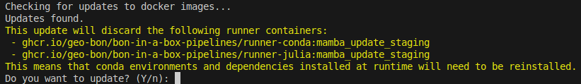

Installation
Le Moteur d’Évaluation de la Biodiversité (BEE) est accessible directement sur notre plateforme en ligne, sans qu’il soit nécessaire d’installer un logiciel. Pour la plupart des utilisateurs, nous recommandons la version en ligne.
Vous pourriez toutefois souhaiter installer BEE localement si vous :
Souhaitez contribuer à BEE : développer, tester ou modifier des pipelines analytiques, des scripts ou d’autres composants de la plateforme.
Avez des préoccupations concernant la confidentialité ou la sécurité des données : exécuter des analyses dans votre propre environnement informatique plutôt que de téléverser des données sensibles sur la plateforme en ligne.
Avez besoin d’un environnement informatique personnalisé : configurer BEE selon des exigences techniques ou institutionnelles particulières.
Pour exécuter BEE localement, suivez les instructions d’installation ci-dessous.
Tutoriel vidéo
Déployer le Moteur d’Évaluation de la Biodiversité (BEE) localement
BEE peut être installé et exécuté sur un ordinateur local. Même si les ordinateurs personnels disposent de moins de puissance de calcul que les serveurs, ils conviennent mieux au développement de pipelines et au travail avec de petits exemples. Les utilisateurs qui ajoutent des scripts et créent des pipelines sur leur ordinateur peuvent les exécuter directement dans l’interface de BEE.
Prérequis :
Un compte GitHub et git installé sur votre ordinateur.
Au moins 6 Go d’espace libre (la mémoire vive requise dépend du script exécuté).
Un shell Linux.
- Il peut s’agir de Terminal sur Mac ou de Git Bash sur PC.
Étape 1 : Installer Docker
Installez Docker ici.
- Remarque : il n’est pas nécessaire de créer un compte.
- Pour vérifier que Docker est dans le chemin d’accès de votre terminal, exécutez
docker run --rm hello-world. - Utilisateurs de Mac : vérifiez le type de puce de votre ordinateur et téléchargez la version appropriée.
- Si un message d’erreur s’affiche lors de l’exécution de
docker run --rm hello-world, consultez https://stackoverflow.com/a/71923962/3519951. - Si l’erreur
no matching manifest for linux/arm64/v8 in the manifest list entriess’affiche, exportez DOCKER_DEFAULT_PLATFORM. Consultez https://stackoverflow.com/a/76404045/3519951. - Si votre ordinateur est doté d’une puce Apple Silicon, cochez « Use Rosetta for x86_64/amd64 emulation on Apple Silicon » dans les préférences de Docker Desktop. Consultez l’issue #175.
- Si un message d’erreur s’affiche lors de l’exécution de
- Utilisateurs de Linux : veillez à ajouter votre utilisateur au groupe docker.
Étape 2 : Générer une clé SSH
Vérifiez d’abord que vous n’avez pas déjà de clé SSH sur votre ordinateur en exécutant
ls -al ~/.sshdans votre terminal.Si une clé existe déjà, elle portera l’un des noms suivants :
id_rsa.pub
id_ecdsa.pub
id_ed25519.pub
Si vous n’avez pas encore de clé, générez-en une en exécutant
ssh-keygen -t ed25519 -C "your_email@example.com"et en remplaçant l’adresse par celle associée à votre compte GitHub.- Vous serez invité à créer une phrase secrète. Bien que plus sécurisée, celle-ci devra être saisie souvent lors de la création d’un pipeline. Pour simplifier l’utilisation, vous pouvez omettre la phrase secrète en appuyant sur Entrée aux invites.
Pour vérifier que la clé SSH a bien été créée, exécutez
ls -al ~/.sshdans le terminal. Votre clé devrait maintenant s’y trouver.Ouvrez ensuite le fichier contenant votre clé SSH en exécutant
cat ~/.ssh/<name of SSH key>, p. ex.cat ~/.ssh/id_ed25519.pub, puis copiez la clé.Ajoutez la clé à votre compte GitHub : ouvrez les paramètres GitHub, puis SSH and GPG keys et sélectionnez « New SSH key ». Donnez-lui le nom de votre choix et collez la clé dans le champ « Key ».
Étape 3 : Cloner le dépôt
Choisissez un dossier qui n’est pas synchronisé avec un service de sauvegarde infonuagique.
Utilisateurs de Windows : assurez-vous que le dépôt cloné se trouve dans le dossier utilisateur (par exemple
C:\Users\yourname\bon-in-a-box) et non dans OneDrive.Utilisateurs de Mac : assurez-vous que le dépôt cloné se trouve dans le dossier utilisateur (par exemple
~/bon-in-a-box) et non dans iCloud.Clonez le dépôt dans un terminal en exécutant
git clone --config core.autocrlf=false git@github.com:GEO-BON/bon-in-a-box-pipelines.git, ou utilisez GitHub Desktop.Utilisateurs de Windows uniquement : si vous utilisez GitHub Desktop pour cloner le dépôt, exécutez les étapes supplémentaires suivantes dans la console après le clonage pour éviter les problèmes de fins de ligne CRLF :
cdto the cloned folder’s root directory (for examplecd /c/Users/yourUsername/folder/bon-in-a-box-pipelines)git config core.autocrlf falsegit rm --cached -r .git reset --hard
Étape 4 : Configurer le fichier d’environnement
Définissez les variables d’environnement : ouvrez le dépôt que vous venez de cloner sur votre ordinateur.
Repérez le fichier
runner-sample.env.Dupliquez le fichier et nommez la copie
runner.env.Renseignez les propriétés selon les tâches que vous souhaitez exécuter. Ajoutez les clés API nécessaires pour accéder aux données (p. ex. GBIF ou UICN).
- Pour accéder au catalogue du UN Biodiversity Lab dans le sélecteur STAC, définissez
UNBL_API_KEYavec la clé fournie par le UN Biodiversity Lab. Le catalogue répond actuellement même sans clé, mais celle-ci est nécessaire pour accéder aux éléments dans les pipelines.
- Pour accéder au catalogue du UN Biodiversity Lab dans le sélecteur STAC, définissez
Au besoin, ajustez les options du serveur (facultatif).
À l’aide d’un terminal Linux (Terminal sur Mac, Git Bash ou WSL sous Windows), accédez au dossier du dépôt cloné.
Si vous ne vous trouvez pas dans le dossier du dépôt cloné, accédez à celui-ci pour que le terminal puisse utiliser les fichiers. Utilisez la commande `cd <folder name>`.
- Sous Windows, les lecteurs sont indiqués par
/c/plutôt queC:\. Le chemin devrait ressembler à
` /c/Users/yourUsername/folder/bon-in-a-box-pipelines`
- Sous Windows, les lecteurs sont indiqués par
Dans le terminal Linux, saisissez
./server-up.sh.Remarque pour les utilisateurs de Windows : il faut utiliser un terminal Linux (p. ex. Git Bash). Le lancement local du serveur ne fonctionnera pas dans PowerShell ni dans l’invite de commandes Windows (CMD).
Si vous utilisez Docker Desktop, assurez-vous que Docker est ouvert et fonctionne sur votre ordinateur.
La première exécution sera longue, car elle téléchargera les microservices. Les suivantes seront plus courtes ou immédiates, selon les changements.
Des problèmes de réseau peuvent faire échouer le processus. Essayez d’abord de relancer la commande. Les étapes intermédiaires sont sauvegardées; en cas d’échec, tout ne sera donc pas recommencé.
Les utilisateurs de Windows devront peut-être activer la virtualisation et d’autres outils nécessaires à Docker Desktop, puis mettre WSL à jour (« wsl –update »; consultez https://docs.docker.com/desktop/troubleshoot/topics/#virtualization). Il peut être nécessaire d’accéder au BIOS pour activer la virtualisation.
Le script de démarrage peut vous proposer une mise à jour. Il est recommandé de l’accepter.
Étape 6 : Arrêter BEE
Lorsque vous avez terminé, exécutez
./server-down.shdans le terminal pour arrêter le serveur.Sous Windows, il peut être nécessaire d’exécuter
wsl --shutdownpour arrêter complètement les processus.
Mettre à jour BEE
Chaque fois que le serveur démarre, le script de démarrage vérifie les mises à jour et vous les propose. Saisissez y pour les accepter ou appuyez sur Entrée pour lancer la mise à jour.
Il est généralement recommandé d’accepter les mises à jour, sauf dans les cas suivants :
Votre connexion Internet est instable, soumise à une limite de débit ou facturée à l’utilisation. Reportez la mise à jour en saisissant
njusqu’à ce qu’une meilleure connexion soit disponible. Vous pouvez également utiliser l’option./server-up.sh --offlinepour ignorer complètement la vérification des mises à jour. Utilisez cette option avec prudence, car des erreurs peuvent survenir si des composants du dépôt dépendent de nouvelles fonctionnalités du serveur.Les conteneurs d’exécution doivent être remplacés alors que vous utilisez un pipeline qui a installé des dépendances. Cela concerne une minorité de scripts dont les dépendances ne sont pas disponibles sur anaconda.org. Comme leur installation à la volée peut prendre du temps, une mise à jour des conteneurs d’exécution affichera un avertissement semblable à celui-ci :

Dans ce cas, reportez la mise à jour jusqu’à ce que vous ayez le temps de lancer une exécution qui réinstallera les dépendances.
Déployer BON in a Box sur un serveur
Les étapes d’installation sur un serveur sont les mêmes que sur un ordinateur Linux, mais certaines configurations supplémentaires doivent être modifiées.
Dans runner.env :
Choisissez
HTTP_ADDRESSetHTTP_PORTselon la configuration de votre serveur. Dans une installation standard, utilisez0.0.0.0comme adresse HTTP et le port par défaut (80).Définissez
SCRIPT_SERVER_CACHE_CLEANER=partial. Les résultats calculés seront ainsi conservés sur le serveur tant qu’ils ne seront pas recalculés avec une nouvelle version du script. Les résultats du dossier de sortie restent toujours accessibles par URL.Pour empêcher les utilisateurs de modifier les pipelines, définissez
SAVE_PIPELINE_TO_SERVER=deny.Il est recommandé d’utiliser un CAPTCHA sur les serveurs accessibles au public. Ajoutez vos clés reCAPTCHA de Google.
Si le serveur sert uniquement à des démonstrations, définissez la variable d’environnement
BLOCK_RUNS=true.Configurez la section « Cloud-scaling » si vous avez accès à un cluster Kubernetes. Cette fonctionnalité est encore expérimentale.
La connexion à un ordinateur de haute performance (HPC) est encore expérimentale. Consultez la documentation destinée aux développeurs (en anglais) pour connaître les instructions et les limites.
Configuration du serveur :
Les sorties sont précieuses, tandis que le serveur peut être recréé à tout moment. Envisagez de monter un lecteur externe sauvegardé dans le dossier de sortie de votre installation de BEE.
Par défaut, BEE écoute les requêtes HTTP. Pour activer HTTPS, placez-le derrière un proxy inverse (documentation ici) et activez HTTPS avec Certbot (documentation ici).
Dépannage
Voici quelques erreurs d’installation courantes et leurs solutions.
Impossible de lancer le serveur
Si vous n’arrivez pas à vous connecter au serveur, vérifiez (1) que l’application Docker Desktop est ouverte, (2) que vous exécutez
./server-up.shdans un terminal Linux (p. ex. Git Bash ou WSL sous Windows, ou Terminal sur Mac; PowerShell et CMD ne permettent pas de lancer le serveur localement) et (3) que votre clé SSH est enregistrée sur votre ordinateur et dans GitHub.Docker échoue avec une erreur Bad Gateway
Si vous obtenez une erreur semblable à
unable to get image 'ghcr.io/geo-bon/bon-in-a-box-pipelines/runner-julia:mamba_update_staging': request returned 502 Bad Gateway for API route and version http://%2F%2F.%2Fpipe%2FdockerDesktopLinuxEngine/v1.49/images/ghcr.io/geo-bon/bon-in-a-box-pipelines/runner-julia:mamba_update_staging/json, check if the server supports the requested API versionCette discussion présente plusieurs causes possibles. Pour l’un de nos utilisateurs, le problème a été résolu en désactivant « containerd image store » dans les paramètres de Docker Desktop.
BEE ne s’affiche pas à http://localhost
Un conflit de ports peut survenir si vous utilisez un Mac ou si Apache ou NGINX est installé. Pour le résoudre, modifiez le fichier
runner.envet indiquez un autre port dansHTTP_PORT. Par exemple, avecHTTP_PORT=5522, BON in a Box sera accessible à http://localhost:5522.Un script prend beaucoup trop de temps sur mon Mac
Si la durée des scripts est beaucoup plus longue que pour les utilisateurs de Linux ou de Windows et que votre Mac est doté d’une puce Apple Silicon, activez « Use Rosetta for x86_64/amd64 emulation on Apple Silicon » dans les paramètres de Docker Desktop.
À l’inverse, si le script se bloque complètement et ne se termine jamais, essayez de désactiver cette option.
Si vous rencontrez d’autres erreurs, communiquez avec nous sur Discourse ou écrivez-nous à boninabox@geobon.org.
Exécuter un script ou un pipeline
Vous avez installé localement une instance du Moteur d’Évaluation de la Biodiversité de BON in a Box et souhaitez exécuter votre premier script ou pipeline.
Une page permet d’exécuter les scripts et une autre les pipelines. Sélectionnez le script ou le pipeline dans le menu déroulant, puis remplissez le formulaire.
Le formulaire peut vous demander un fichier. Pour fournir un fichier stocké localement, téléversez-le ou copiez-le dans le dossier userdata. Vous pourrez ensuite y faire référence au moyen d’une URL, par exemple /userdata/myFile.shp ou /userdata/myFolder/myFile.shp si des sous-dossiers sont utilisés.